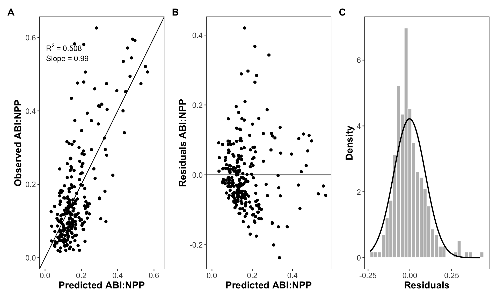

\((ABI:NPP)_i\) is the value of the ABI:NPP ratio for each site and year
\(MR\) is a parameter representing the maximum ABI:NPP ratio (dimensionless)
\(\epsilon_i\) is the random error for each observation \(i\)
\(g(T_{med})\) is a function with values between 0 and 1, which depends on temperature.
\(g(PREC)\) is a function with values between 0 and 1, which depends on precipitation.
with the Logistic modified function for temperature and Log-normal for precipitation \[g(T_{med})=(1-T_a) \times \left[\frac{1}{1+\exp (-k \times (TMED - T_{OPT})) }\right] + T_a\] \[g(PREC)=\exp \left[ -\frac{1}{2} \left(\frac{\log{(\frac{PREC}{P_{OPT}}}) }{P_b}\right)^2 \right]\]
\(TMED\) is the value of the annual mean temperature
\(T_{OPT}\) = optimum value of the annual mean temperature at which occur the maximum ratio (Lognormal and Gaussian models) or that represent the half-saturation point (logistic part in the Logistic modified model)
\(k\) = rate that determines the steepness of the logistic curve
\(T_a\) = scaling factor that adjust the influence of the logistic function.
\(PREC\) is the value of the annual precipitation
\(P_{OPT}\) = value of the precipitation at which the ABI:NPP ratio is expected to be optimum
\(P_b\) = scale parameter that adjust for the variability in the response of the ABI:NPP ratio to changes in precipitation
### Temperature (Logistic mod.); Precipitation (Log-normal) (**mcombrat7**)mcombrat7 <-function(MR, Ta, k, Topt, Popt, Pb){# log-mod temperature# log-normal prec tmed_effect <- (1-Ta)*(1/ (1+exp(- k *( d$tmed - Topt)))) + Ta prec_effect <-exp(-0.5*(log(d$prec/Popt)/Pb)^2) MR * tmed_effect * prec_effect}var=list(mean ="predicted", x ="rat", tmed ="tmed", prec ="prec", log =TRUE)set.seed(123456)result_mcombrat7 <-anneal(model = mcombrat7, var = var, source_data = d,par =list(MR =0.7, Ta =0.5, k =-1, Topt =10, Popt =500, Pb =2), par_lo =list(MR =0, Ta =0, k =-2, Topt =0, Popt =300, Pb =0),par_hi =list(MR =1, Ta =1, k =2, Topt =20, Popt =1000, Pb =5),pdf = dnorm,dep_var ="rat",initial_temp =5, temp_red =0.975, max_iter =200000, show_display =FALSE)result_mcombrat7 |> likelihood::write_results("../output/models/multiplicative_tmed_logisticmod_prec_lognormal.txt")
Validation Plot
This figure corresponds to figure S6 in the manuscript.
An high-resolution version of this figure is available here.
Code
plot_validation

Observed vs. Predicted ABI:NPP (a) and Residuals vs. Predicted ABI:NPP plots (b) of the selected model. Histogram of the residuals of the selected model (c).
Values and support intervals of the parameters for the selected model. MR = Maximum ABI:NPP ratio. TMED, TOPT, k and Tsub>a are parameters of the annual mean temperature function (logistic modified), where TMED = value of the annual mean temperature, TOPT = value of the annual mean temperature which represent the half-saturation point of the logistic part of the equation and k = rate that determines the steepness of the logistic curve. Ta is a scaling factor that adjust the influence of the logistic function (i.e. a baseline value or offset). PREC, POPT and Pb are parameters of the annual precipitation function (lognormal), where PREC = value of the precipitation, POPT = value of the precipitation at which the ABI:NPP ratio is expected to be optimum, and Pb = scale parameter that adjust for the variability in the response of the ABI:NPP ratio to changes in precipitation.
Source Code
---title: "Selected Model"format: html: toc: false keep_md: trueexecute: message: false warning: false cache: true---$$(ABI:NPP)_i=MR \times g(T_{med}) \times g(PREC) + \epsilon_i$$where: - $(ABI:NPP)_i$ is the value of the ABI:NPP ratio for each site and year- $MR$ is a parameter representing the maximum ABI:NPP ratio (dimensionless)- $\epsilon_i$ is the random error for each observation $i$- $g(T_{med})$ is a function with values between 0 and 1, which depends on temperature. - $g(PREC)$ is a function with values between 0 and 1, which depends on precipitation. with the Logistic modified function for temperature and Log-normal for precipitation $$g(T_{med})=(1-T_a) \times \left[\frac{1}{1+\exp (-k \times (TMED - T_{OPT})) }\right] + T_a$$ $$g(PREC)=\exp \left[ -\frac{1}{2} \left(\frac{\log{(\frac{PREC}{P_{OPT}}}) }{P_b}\right)^2 \right]$$ - $TMED$ is the value of the annual mean temperature- $T_{OPT}$ = optimum value of the annual mean temperature at which occur the maximum ratio (Lognormal and Gaussian models) or that represent the half-saturation point (logistic part in the Logistic modified model)- $k$ = rate that determines the steepness of the logistic curve- $T_a$ = scaling factor that adjust the influence of the logistic function. - $PREC$ is the value of the annual precipitation- $P_{OPT}$ = value of the precipitation at which the ABI:NPP ratio is expected to be optimum- $P_b$ = scale parameter that adjust for the variability in the response of the ABI:NPP ratio to changes in precipitation```{r}library(tidyverse)library(patchwork)library(likelihood)library(kableExtra)# install.packages("pak")# pak::pak("ajpelu/likelihoodTools")library(likelihoodTools)library(MASS)source("../scripts/aux.R")annual_pet <-read_csv("../data/spei_climate.csv") |> dplyr::select(sp_elev, year, monthly_pet, monthly_tmed, monthly_prec) |>group_by(sp_elev, year) |>summarise(pet =sum(monthly_pet), prec =sum(monthly_prec),tmed =mean(monthly_tmed, na.rm =TRUE)) |>rowwise() |>mutate(water_balance = prec - pet)ratio <-read_csv("../data/ratio_abinpp.csv") |> dplyr::select(year, sp_code, elev_code, sp_elev, ratio_abi_npp = ratio) df <- ratio |>inner_join(annual_pet) |>pivot_longer(pet:water_balance, values_to ="mean_climate", names_to ="climate_variable")d <- df |>filter(climate_variable %in%c("tmed", "prec")) |>pivot_wider(values_from = mean_climate, names_from = climate_variable) |> dplyr::rename(rat = ratio_abi_npp) |>mutate(species =paste0("P. ", sp_code))``````{r}### Temperature (Logistic mod.); Precipitation (Log-normal) (**mcombrat7**)mcombrat7 <-function(MR, Ta, k, Topt, Popt, Pb){# log-mod temperature# log-normal prec tmed_effect <- (1-Ta)*(1/ (1+exp(- k *( d$tmed - Topt)))) + Ta prec_effect <-exp(-0.5*(log(d$prec/Popt)/Pb)^2) MR * tmed_effect * prec_effect}var=list(mean ="predicted", x ="rat", tmed ="tmed", prec ="prec", log =TRUE)set.seed(123456)result_mcombrat7 <-anneal(model = mcombrat7, var = var, source_data = d,par =list(MR =0.7, Ta =0.5, k =-1, Topt =10, Popt =500, Pb =2), par_lo =list(MR =0, Ta =0, k =-2, Topt =0, Popt =300, Pb =0),par_hi =list(MR =1, Ta =1, k =2, Topt =20, Popt =1000, Pb =5),pdf = dnorm,dep_var ="rat",initial_temp =5, temp_red =0.975, max_iter =200000, show_display =FALSE)result_mcombrat7 |> likelihood::write_results("../output/models/multiplicative_tmed_logisticmod_prec_lognormal.txt")```### Validation Plot- This figure corresponds to figure S6 in the manuscript.- An high-resolution version of this figure is available [here](../output/plot_model_validation.jpg).```{r}#| echo: false#| fig-show: 'hide' p_observed <-mle_plot_observed(result_mcombrat7, yvar ="rat", lab_y ="Observed ABI:NPP", lab_x="Predicted ABI:NPP") p_residuals <-mle_plot_residuals(result_mcombrat7, yvar ="rat", lab_residuals ="Residuals ABI:NPP", lab_predicted ="Predicted ABI:NPP")h <- result_mcombrat7$source_data |> dplyr::mutate(residuals = rat - predicted)# estimate the distribution of the residuals dist <- MASS::fitdistr(h$residuals, "normal") params <-as.data.frame(t(dist$estimate))p_residuals_dist <-ggplot(h, aes(x = residuals)) +geom_histogram(aes(y =after_stat(density), x = residuals), fill ="gray", col ="white") +theme_bw() +theme(panel.grid =element_blank()) +xlab("Residuals") +ylab("Density")p_residuals_dist <- p_residuals_dist +stat_function(fun = dnorm, args =list(mean = params$mean, sd = params$sd), color ="black", linewidth = .85) plot_validation <- (p_observed + p_residuals + p_residuals_dist +plot_annotation(tag_levels ="A")) &theme(axis.title =element_text(size =14, face ="bold"), axis.text =element_text(size =11),plot.tag =element_text(size =14, face ="bold"))``````{r}#| code-fold: true#| fig-cap: "Observed vs. Predicted ABI:NPP (a) and Residuals vs. Predicted ABI:NPP plots (b) of the selected model. Histogram of the residuals of the selected model (c)." #| fig-width: 10#| fig-height: 6plot_validationggsave( plot_validation,file ="../output/figure_model_validation.jpg",dpi =600,width =13, height =5.5 )```### Values and support parameters - This table corresponds to table S5 in the manuscript.```{r}#| fig-cap: "Values and support intervals of the parameters for the selected model. MR = Maximum ABI:NPP ratio. T<sub>MED</sub>, T<sub>OPT</sub>, k and Tsub>a</sub> are parameters of the annual mean temperature function (logistic modified), where T<sub>MED</sub> = value of the annual mean temperature, T<sub>OPT</sub> = value of the annual mean temperature which represent the half-saturation point of the logistic part of the equation and k = rate that determines the steepness of the logistic curve. T<sub>a</sub> is a scaling factor that adjust the influence of the logistic function (i.e. a baseline value or offset). PREC, P<sub>OPT</sub> and P<sub>b</sub> are parameters of the annual precipitation function (lognormal), where PREC = value of the precipitation, P<sub>OPT</sub> = value of the precipitation at which the ABI:NPP ratio is expected to be optimum, and P<sub>b</sub> = scale parameter that adjust for the variability in the response of the ABI:NPP ratio to changes in precipitation." support_limits_table <-function(x) { data <- x out <-inner_join( (data$lower_limits |>bind_rows() |>pivot_longer(everything(), names_to ="parameter", values_to ="lower_si")), (data$upper_limits |>bind_rows() |>pivot_longer(everything(), names_to ="parameter", values_to ="upper_si")) )return(out)}limits <-support_limits(mcombrat7, result_mcombrat7$best_pars,var = var,source_data = d, pdf = dnorm,par_lo =list(MR =0, Tb =-1, k =-1.7, Topt =6, Popt =0, Pb =0),par_hi =list(MR =1.5, Tb =0.9, k =1, Topt =20, Popt =3100, Pb =1),slimit =2)table_support_limits <-inner_join( result_mcombrat7$best_pars |>bind_rows() |>pivot_longer(everything(), names_to ="parameter", values_to ="best_pars"),support_limits_table(limits))table_support_limits |>write_csv("../output/models/table_params_support_limit.csv")table_support_limits |>kbl(digits =c(0,3,3,3)) |>kable_styling()```
{kind=link}